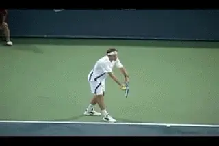
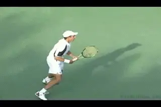
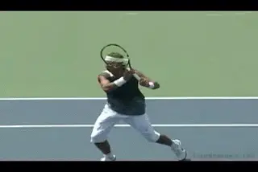
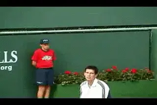

When Momentum is Neutral¶
When Momentum is Neutral¶
By Alistair Higham¶

Neutral Momentum can produce the most exciting matches.
So far we've looked at the concept of Momentum, and how to react when momentum is with you, and when it is totally with you. (link.) In this article, let's look at the third stage of momentum: When Momentum is Neutral. Neutral momentum means that things are in the balance --the scales are waiting to be tipped by one player or the other. It can be an unnerving or exciting feeling, because things could swing either way. This is the opportunity top players seize by stepping up and going for the victory.
When the momentum is neutral the level of play and the energy levels of the two players is even. Some of the most exciting and memorable matches occur when momentum is netural with the players are at their best and involved in an epic tussle. The atmosphere can be electric with hopes, fears and anticipation. This happened in a Davis Cup tie I witnessed in 1999, Great Britain versus the USA.
The match score was two all and in the final match, Greg Rusedski and Jim Courier were tied at 2 sets apiece. As the fifth set advanced, the deadlock continued. The crowd was at fever pitch, the television audience soared, and the players became gladiators more than tennis players.

The momentum is also neutral when the players are sparring and feeling each other out.
Courier said he dealt with the huge crowd support for Rusedski by imagining he was in a row boat in a storm with waves crashing over, but it was his job to simply keep rowing. Courier and the USA went on to win, but as Peter Fleming, the TV commentator said, so did the sport of tennis. Neutral momentum is rarely as exciting as in tennis because the players don't have teammates and there is no time limit to cut the battle of wills short.
At other times, neutral momentum can be far less exciting. It can seem as if nothing much is happening in the match, rather like two boxers just sparring. At football matches (Americans call it soccer), crowds go quiet when the momentum is neutral in this way and players are passing the ball around without any obvious attacking inclinations.
Neutral momentum can look this way at the beginning of the match, as the players feel each other out. But it can also occur well into the match, when neither player can find his rhythm, and the game is full of errors from both players (such as when neither player seems able to hold their serve). For example, there can be neutral momentum when the match is 2-2 in the second set, even though one player is a set ahead. That is not as exciting as neutral momentum at 5-5 in the final set.
Don't Wait
But whenever neutral momentum occurs, this is the time when there are chances for surging ahead, chances that can be created or taken. When the momentum is neutral, you need to be ready to grab it. The player who waits in this situation is like a sprinter waiting on the line for their rival to shout \"go\". You have to be looking to establish a flow of momentum in your favor.

Neutral momentum offers the chance to grab opportunities.
If you wait for your opponent to do something, it is possible that you will end up raising your game too late to win the set. In days gone by, it was more possible to wait, in the hope your opponent would try to seize momenturm first and make a mistake. These days, the saying \"he who hesitates is lost\" is more appropriate.
You often hear of players nearly pulling off an upset, then consoling themselves with the thought that there was nothing they could do when it came down to it, because their opponent came up with the goods. Usually this is because they waited for something to happen.
Grab it
When the momentum is neutral, higher-ranked players will often raise their game, spurred on by the realization that they must act before it's too late. But how should you grab it? What do you do to raise your game? In what way should you act?
It can be tactically, by zoning in on specific tactics you have discussed with your coach before the match. Sometimes, if your opponent is looking nervous, grabbing the momentum may mean showing them you are up for the fight and making them play every ball by playing percentage tennis.
| ------------------------------------------------------------------------ |  | |
| The right attitude is critical to surge ahead when the opportunity comes. |
On the other hand, there may be times when percentage tennis is not enough. Recently I was the on court captain for Britain when we played Spain in the semi-final of the European Championship. We lost in the final set of the final doubles. We had played high levels of tennis that would have beaten most teams. But when momentum was neutral we didn't find the levels of exceptional tennis that the Spanish found. We were devastated. Sometimes you need more than percentage tennis. Whatever you do, decide quickly and do it. Keep the future in your hands.
Be Ready Before You Begin
To grasp the opportunity to surge ahead requires that you are properly psyched up to do so before the match begins.
This is particularly true if you are playing an opponent you are not expected to beat. You have to be mentally ready to stick the knife in if the opportunity of neutral momentum comes along. Don't wait to see what happens, because the opportunity will disappear quickly against the better players. (If you don't like the idea of sticking the knife in you can always push them over the cliff or take the bull by the horns!)
A phrase used by Tim Henman's former coach, David Felgate was \"step up to the plate.\" This came about after Tim lost a number of matches to better players early in his career and seemed happy to have played well. David felt he was never really in the match as a serious contender when key moments came up. That changed and Tim's results improved.

When momentum is neutral step up and stick in the knife.
Come Back and Go
Grabbing the situation might simply mean urging yourself to forge ahead to win when you have pulled back from being well behind. Very often you will see a player comeback and draw level, only to relax and lose the set.
There are many examples of players who made a change in their game or renewed their efforts when they were behind, but as soon as they pull level in the score, they thought the job was done and relaxed their fighting spirit. Their energy dropped and they lost the momentum.
At the same time the player in the lead may relax when an opponent comes from behind and draws even, because their fears have been realized. Sometimes this releases tension, sometimes it makes them angry. Either way their energy and fighting spirit often goes up.
This change in energy on court from either one or both players is why the momentum can switch again, and the player who has come back can lose. So, if you are the player who fights to draw level, be determined to keep fighting and surge ahead. Be aware that the game when the scores are level is key if you intend to win. Never draw level and wait to see what happens -- come back and then go forward!

Alistair Higham is the National Manager of Coach Development for the LTA, the governing body for tennis in Great Britain. He is the author of [Momentum: The Hidden Force in Tennis]. Alistair is a former professional player who continues to compete successfully at the highest levels of English regional tennis. He has developed and coached dozens of top junior players, and traveled extensively on the international junior circuit, where he has had the unique opportunity to make a close study of the hidden force that dictates so much in the outcome of competitive tennis matches.

Momentum: The Hidden Force in Tennis Alistair Higham
Read this important new perspective on momentum and the development of the mental game, by top English coach Alistair Higham. Based on his observation of literally thousands of competitive matches as well as his own professional career, this book will give you the perspective and the tools to create momentum in your own matches and deal with the critical turning points that are the difference between winning and losing.